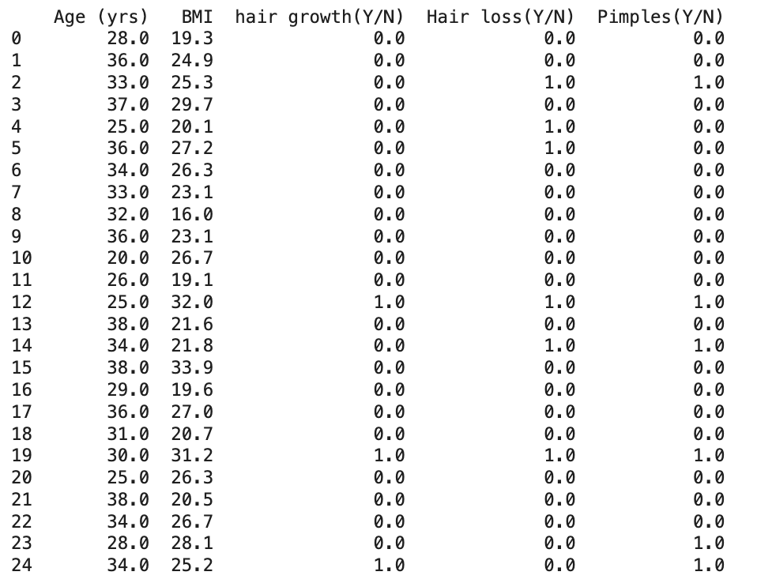
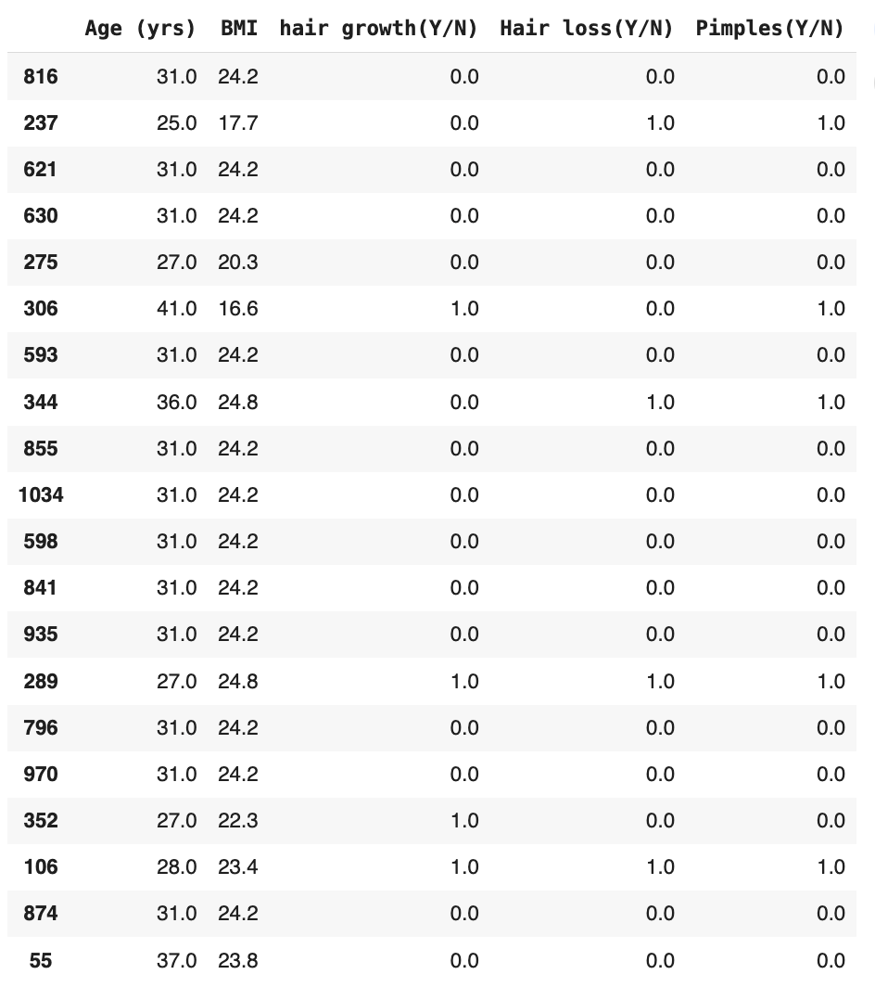
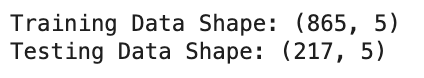

üî∑ What is Ensemble Learning?
Ensemble Learning is a powerful machine learning strategy where multiple individual models (often called "weak learners") are combined together
to create a stronger, more accurate predictive model. Instead of relying on just one model’s predictions, ensemble methods leverage the wisdom of multiple models to improve performance,
reduce overfitting, and enhance generalization to new data.
The idea is simple: by aggregating different models, we can minimize the chances of making large errors and build a more robust system overall.
Common ensemble techniques include Bagging (e.g., Random Forest), Boosting (e.g., AdaBoost, Gradient Boosting), and Voting Classifiers.
ü߆ How Ensemble Applies to PCOS Prediction
For this project, Ensemble Learning methods were used to strengthen PCOS prediction models.
By combining multiple models (like Decision Trees, Logistic Regression, and SVM) into Voting Classifiers and experimenting with Random Forests and Boosting techniques,
we enhanced model accuracy and robustness on the PCOS dataset.
The ensemble methods helped balance prediction performance across both PCOS-positive and PCOS-negative classes,
overcoming biases that sometimes occur when using a single model alone. This resulted in improved overall model reliability and better handling of diverse patient profiles.
üìã Method Used in This Project
For this project, we focused on using the Random Forest Classifier as our primary Ensemble Learning method.
Random Forest is based on the Bagging approach, where multiple Decision Trees are trained on different random subsets of the data,
and their predictions are averaged (for regression) or voted (for classification) to produce the final output.
This method helped in reducing overfitting compared to a single Decision Tree, improving the overall prediction accuracy on the PCOS dataset.
Random Forest also provided valuable insights into feature importance, helping us identify which clinical features were the most influential in predicting PCOS.
üìä Access Full Ensemble Code on GitHub
You can view the full Ensemble implementation code, including data cleaning, splitting, model training with various kernels, and evaluation, through the link below:
View Ensemble Code on GitHub
üå≥ Ensemble Learning (Random Forest) - Data Preparation & Code
1️⃣ Core PCOS Dataset Preparation
For the Ensemble Learning model (specifically Random Forest Classifier), we worked with the Core PCOS Cleaned Dataset.
The process involved thorough cleaning and feature selection to ensure that the dataset was numeric and properly labeled, making it ideal for ensemble modeling.
1️⃣ Cleaned Dataset
The preprocessing steps included:
- Removing unnecessary whitespace from column names.
- Selecting key features such as Age (yrs), BMI, hair growth, Hair loss, Pimples, and the target PCOS (Y/N).
- Encoding categorical variables (Y/N) into binary numeric values (0 for No, 1 for Yes).
Below is a snapshot of the dataset before cleaning:
Below is a snapshot of the cleaned dataset ready for Random Forest modeling:

2️⃣ Sample Train and Test Data
After cleaning, the data was split into 80% training and 20% testing subsets using scikit-learn’s train_test_split.
This disjoint split ensures that the model is trained and evaluated on completely different sets of data, enabling a reliable assessment of performance.


Below is the output that confirms the dimensions of the training and testing datasets:

üìà Random Forest Classifier Results
After training the Random Forest model on the Core PCOS dataset, we evaluated its performance using the confusion matrix, classification report, and feature importance plot.
✅ Confusion Matrix
The confusion matrix shows that the model correctly identified 139 non-PCOS patients and 22 PCOS patients. However, 47 PCOS cases were missed, and 9 non-PCOS cases were incorrectly predicted as PCOS.
üìÑ Classification Report
The classification report highlights precision and recall values.
The model had high precision for both classes but struggled with recall for PCOS cases, indicating that it tends to miss some true PCOS cases.
üåü Feature Importance Plot
This bar chart displays which features were most important in predicting PCOS. Features like Hair Growth, BMI, and Age played major roles in influencing the model’s decisions.
üîç Conclusion: Ensemble Learning with Random Forest
The Random Forest Classifier provided strong and reliable results for predicting PCOS from the Core PCOS Dataset.
With an overall accuracy of 74%, it demonstrated good generalization capabilities across both training and testing data.
The confusion matrix and classification report revealed that the model performed very well in predicting the majority class (non-PCOS),
but had some difficulty correctly identifying all PCOS cases, resulting in moderate false negatives.
This is common in medical datasets where imbalanced classes or overlapping symptoms exist.
Feature importance analysis showed that clinical indicators such as Age, BMI, and hair growth played major roles in the model’s decision-making,
providing valuable insights into the key factors associated with PCOS risk.
Overall, Random Forest proved to be an effective ensemble method, benefiting from its ability to combine multiple decision trees to improve robustness and reduce overfitting.
Its performance was comparable to simpler models like Decision Trees and SVMs, but with improved stability across different splits.
In future iterations, fine-tuning hyperparameters (such as number of trees, depth of trees, and feature sampling) could further boost model accuracy and sensitivity to better capture PCOS-positive cases.